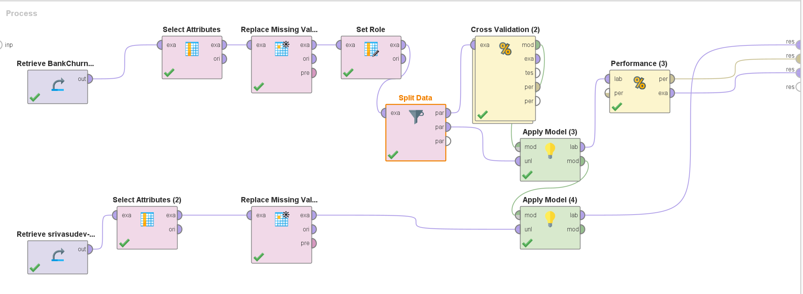
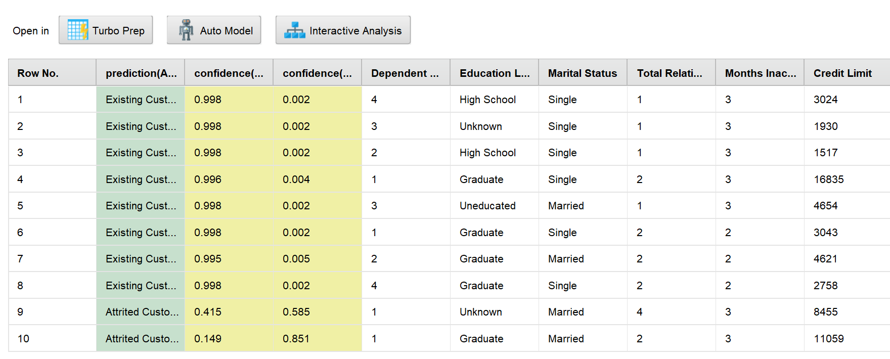

The bank weighted model accuracy at 15%. Confidence stability counted for 50%. That inversion is the whole difference between a model that scores well and a model you can actually put in front of customers.
Customer attrition is a direct hit to lifetime value, and Great One Bank wanted to intervene before customers left rather than after. The Churn Shield initiative built a Gradient Boosted Trees classifier to flag who was about to go.
By Phase 2 the model looked strong: 92.36% accuracy, solid precision and recall, and good behaviour on imbalanced data. The team had consensus. The obvious next step was to ship it.
Phase 3 existed to prevent exactly that. Before production rollout, the model had to survive contact with records nobody had seen — and be judged on criteria that had very little to do with the accuracy number everyone was quoting.
Production readiness was assessed on a weighted rubric, and the weighting is the most interesting artefact of the whole project:
Accuracy carried the least weight of the three. A model can be right most of the time and still be unusable — if it is right for unstable reasons, or if it quietly drifts away from the population mix the business plans around. Those two risks took 85% of the score.
The validation design was deliberately blind. Each team member received 10 customer records with the true outcome withheld. The population was constructed so that exactly two of every ten had churned — but which two was unknown going in. Guessing conservatively would be caught by the ratio check; guessing aggressively would be caught by it too.
Gradient boosting does not fit one model to the data. It fits a sequence of shallow trees, each one trained on what the ensemble before it got wrong.
The first tree makes a crude split. The second is trained on the residuals of the first — the gap between prediction and truth. The third corrects what the first two still miss, and so on. Each learner is weak on its own; the sum is not.
That mechanism suits this dataset. Churn signals are interaction effects, not main effects — a falling transaction amount matters differently depending on relationship count and months inactive. Trees capture those interactions natively, without anyone having to specify them. Boosting also tolerates mixed types and unscaled features, which is most of this table.
The comparison was not arbitrary. More than half these features are categorical — education level, marital status, income band, card tier — and the two algorithms handle that very differently.
Label or one-hot encoding happens before the model sees the data. One-hot explodes dimensionality on high-cardinality fields; label encoding invents an ordering that is not real — implying Graduate > High School > Uneducated as a numeric distance the tree can split on.
CatBoost encodes categories using the target itself, but computes each row's statistic only from rows that came before it in a random permutation. That ordering is what prevents the target leakage plain mean-encoding causes, and it is why CatBoost usually needs less preprocessing to reach the same place.
CatBoost reached 97.17% accuracy and 92.48% recall — and still lost the selection, because it reproduced the class split at 70/30 instead of 80/20. Under a rubric weighting ratio alignment at 35% and accuracy at 15%, the stronger classifier is the weaker candidate. The algorithm that generalises best is not automatically the one that deploys best.
The process was built so the training path and the blind-validation path could not contaminate each other — the model is fitted and cross-validated on the bank dataset, then applied, frozen, to the held-out records.

The held-out records pass through the same attribute selection and missing-value handling as the training data. A preprocessing mismatch between training and inference is one of the most common ways a model that validated well fails quietly in production.
Gradient Boosted Trees was the team's pick, but it was tested against CatBoost rather than assumed. CatBoost handles categorical features natively, and this dataset is largely categorical — education, marital status, income band, card tier.
Every prediction carries a confidence score for both classes. The label alone says what the model decided; the confidence says how close the call was — which is where instability shows up first.
With the 80/20 split weighted at 35%, the predicted class mix was treated as a first-class result rather than a side effect — drift here means the downstream retention budget is wrong.
On the blind set the model returned 8 Existing Customers and 2 Attrited Customers — the 80/20 target, hit precisely, with no knowledge of the answer. Phase 3 accuracy came in at 96.51%.
Then the confidence column turned the result into something more useful than a pass mark:
Every retained customer was called at 0.995 or above. Neither churner was. Record 09 was flagged at 0.585 — eight hundredths above a coin flip. The model is near-certain about who is staying and genuinely unsure about who is leaving, which is the opposite of what a retention team needs.
Averaged across the set, confidence in Existing Customer sat at 0.854 against 0.146 for Attrited. That gap is not a bug — it is the imbalanced training distribution showing through into inference. The majority class is simply better learned.

| Model | Accuracy | Precision | Recall | Ratio |
|---|---|---|---|---|
| Gradient Boosted Trees | 92.36% | Strong | Strong | 80 / 20 |
| CatBoost | 97.17% | 90.77% | 92.48% | 70 / 30 |
CatBoost scored higher on every headline metric — nearly five points of accuracy and 92.48% recall. It was not selected, because it reproduced the class split at 70/30 rather than 80/20. Under a rubric that weights ratio alignment at 35% and accuracy at 15%, the better-scoring model loses. That is the rubric working as designed, not a mistake in it.
The rubric puts half its weight on confidence scores. Boosted trees produce some of the least trustworthy confidence scores in common use.
Gradient boosting minimises log-loss by driving the margin between classes as far apart as it can. The number that falls out of the final sigmoid is a ranking score, not a probability. It reliably tells you record 10 is a better churn candidate than record 9. It does not reliably tell you that record 1 has a 0.2% chance of leaving.
The clustering is the tell. Eight records landing between 0.995 and 0.998 is not eight independent assessments of near-certainty — it is the ensemble saturating. On an imbalanced target the majority class is over-represented in every residual round, so the model learns to be loud about it. Platt scaling or isotonic regression against a held-out fold would map these scores onto real frequencies, and a reliability curve would show how far off they currently are.
This is the sharpest gap in the whole project: the rubric weights confidence stability at 50% while the confidence scores themselves were never calibrated. Half the production decision rests on numbers that have not been validated as numbers.
The 0.5 cut-off is a library default, not a business decision. Drag it and watch what the model does with the real attrition confidences from the blind set:
The useful discovery is the empty space. Nothing sits between 0.006 and 0.584. Every threshold across that range — a span covering most of the scale — returns the identical answer. Threshold choice is not where the fragility lives.
The fragility is that record 09 sits at 0.585, one thousandth above the edge of that dead zone. Nudge the cut-off up by 0.002 and a real churner silently stops being flagged, and the 80/20 ratio the bank is budgeting against quietly becomes 90/10.
Ten records per analyst is enough to catch an obviously broken model. It is not enough to certify one.
With two positives in the set, a single misclassification moves measured recall by fifty points. The ratio landing exactly is encouraging, but at this sample size it is not distinguishable from luck. Pooling every analyst's records into one evaluation set would fix it immediately.
The rubric puts half its weight on confidence stability while the scores themselves are uncalibrated. A reliability curve would show whether 0.85 actually means 85% — and on imbalanced data, usually it does not.
The 0.5 cut-off is a default, not a decision. A retention call costs a fraction of a lost customer, so the threshold should sit well below 0.5 — which would likely have caught record 09 with room to spare.
80/20 holding on validation day says nothing about month six. The same check belongs on a monitoring dashboard with an alert on drift, which turns a one-off gate into an ongoing control.
The transferable point: the hardest part of shipping a model is agreeing what “good” means before you measure it. This project set the rubric first — confidence 50, ratio 35, accuracy 15 — and that single decision is what let the team reject a model that scored five points higher.